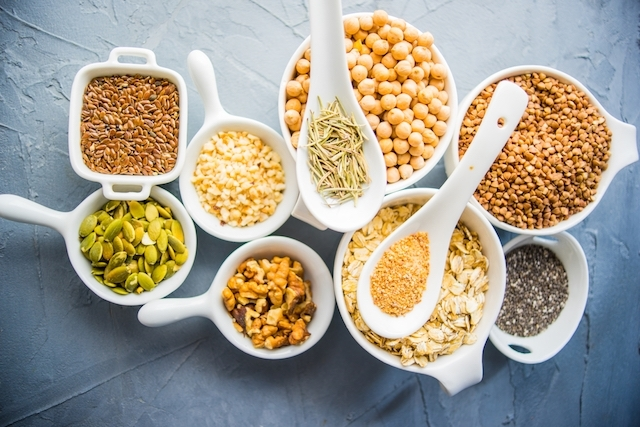

Alimentos ricos em Fibras
Escrito por: Redação • Atualizado em: 28/06/2019
Os alimentos ricos em fibras são principalmente as frutas, verduras, legumes, arroz integral, feijão, milho, grão-de-bico e frutas secas. Mas o farelo de trigo, aveia, gérmen de trigo, e a semente de linhaça também são bons exemplos.
É importante consumir fibras diariamente porque elas melhoram a saúde, combatendo a prisão de ventre, e ainda ajudam a regular os níveis de glicose no sangue, o que ajuda a emagrecer e a combater a diabetes tipo 2. Os principais benefícios das fibras para saúde são:
- Combater a prisão de ventre, pois aceleram o trânsito intestinal;
- Ajudar a emagrecer, pois aumentam a sensação de saciedade;
- Controlar a diabetes, pois ajudam a diminuir os níveis de açúcar no sangue;
- Baixar colesterol e triglicerídeos, pois reduzem a absorção de gorduras no intestino e o aumento do açúcar no sangue;
- Manter a saúde da flora intestinal, pois servem de alimentos para as bactérias benéficas que estão presentes naturalmente no intestino.
Para alcançar todos estes benefícios é necessário consumir alimentos ricos em fibras diariamente, e de preferência, em todas as refeições, no café da manhã, nos lanches, e também no almoço e no jantar, em quantidade adequada.
Lista de alimentos ricos em fibras
A tabela a seguir traz as informações para 100 g dos principais alimentos ricos em fibras:
| Cereais | Quantidade de fibras | Energia |
|---|---|---|
| Farelo de trigo | 30 g | 310 kcal |
| Farinha de Centeio | 15,5 g | 336 kcal |
| Aveia | 9,1 g | 394 kcal |
| Pão de trigo integral | 6,9 g | 253 kcal |
| Verduras, hortaliças e derivados | ||
| Farinha de mandioca | 6,5 g | 365 kcal |
| Couve manteiga refogada | 5,7 g | 90 kcal |
| Brócolis cozido | 3,4 g | 25 kcal |
| Cenoura crua | 3,2 g | 34 kcal |
| Batata doce cozida | 2,2 g | 77 kcal |
| Pimentão verde | 2,6 g | 21 kcal |
| Frutas | ||
| Caqui | 6,5 g | 71 kcal |
| Abacate | 6,3 g | 96 kcal |
| Goiaba | 6,3 g | 52 kcal |
| Laranja da Terra | 4,1 g | 51 kcal |
| Maçã | 2,0 g | 63 kcal |
| Nozes e Sementes | ||
| Linhaça | 33,5 g | 495 kcal |
| Amêndoas | 11,6 g | 581 kcal |
| Castanha do Pará | 7,9 g | 643 kcal |
| Coco cru | 5,4 g | 406 kcal |
| Castanha de caju | 3,7 g | 570 kcal |
| Leguminosas | ||
| Farinha de soja | 20,2 g | 404 kcal |
| Feijão carioca cozido | 8,5 g | 76 kcal |
| Amendoim | 8,0 g | 544 kcal |
| Lentilha cozida | 7,9 g | 73 kcal |
Tipos de fibras alimentares
As fibras alimentares podem ser classificadas como sendo solúveis ou insolúveis, sendo que a principal diferença entre elas é que a fibra solúvel se dissolve em água, enquanto a fibra insolúvel não. Cada uma delas tem seus principais benefícios.
Fibras solúveis
As fibras solúveis se dissolvem na água formando um gel, e por isso permanecem mais tempo no estômago e no intestino delgado, dando assim uma maior sensação de saciedade. Estas fibras também se ligam à gordura e ao açúcar dos alimentos no intestino, ajudando a reduzir o colesterol e a controlar a diabetes.
Alguns exemplos de fibras solúveis são: frutas, vegetais, legumes, e alimentos que contém aveia, gérmen de trigo, cevada e centeio. Elas ajudam a diminuir o colesterol, são fermentadas pelas bactérias boas do intestino e ajudam a manter os minerais.
Fibras insolúveis
As fibras insolúveis não se diluem na água e por isso chegam ao intestino grosso acelerando o trânsito intestinal, aumentando o volume das fezes, e por isso ajudam a prevenir e a combater a prisão de ventre, hemorroidas e inflamações do intestino.
Elas são encontradas principalmente nos cereais inteiros e seus derivados integrais, e a aumentam o volume das fezes, atuando como um laxante natural. Alguns exemplos são: amêndoas com casca, nozes, passas, abacate, pera e maçã com casca, e tangerina
Quantidade de fibras por dia
A ingestão diária de fibras deve ser entre 20 e 40 g por dia. Uma dica para comer mais fibras na dieta é ingerir mais alimentos crus e com casca, especialmente frutas e legumes, evitando alimentos refinados, como farinha de trigo branca e arroz branco.
Para combater a prisão de ventre, é importante lembrar que além de aumentar o consumo de fibras, também deve-se aumentar a ingestão de água ou chá sem açúcar, pois a água hidratas as fibras no intestino, facilitando a passagem das fezes. Comer mais alimentos ricos em água, como gelatina, laranja e melancia, também ajuda a evitar a prisão de ventre causada pela ingestão de mais fibras e menos água.
Como comer mais fibras
Uma ótima solução natural para comer mais fibras é adicionar um suplemento de fibras, como a aveia, a semente de linhaça moída ou o farelo de trigo integral em todas as refeições ao longo do dia. É possível comer uma taça de salada de frutas com aveia ou adicionar o farelo de trigo numa embalagem de iogurte, por exemplo.